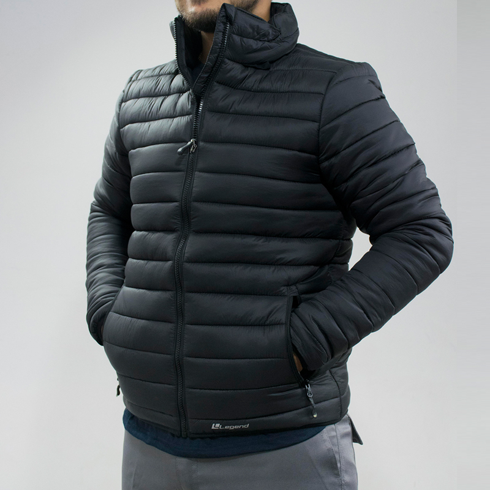

- Casaca de cuero: elegantes y de estilo atemporal. - Casaca acolchada: abrigadas y cómodas, ideales para climas fríos. - Casaca bomber: de estilo retro, aportan originalidad y personalidad.

Casaca acolchada: Las casacas acolchadas son prendas abrigadas y cómodas, con relleno interno para proteger del frío. Son perfectas para climas fríos y para un estilo casual y moderno.

Casaca bomber: Las casacas bomber son prendas de estilo retro inspiradas en las chaquetas de aviador, con puños elásticos y cintura ajustada. Son ideales para looks urbanos y juveniles, aportando un toque de originalidad y personalidad